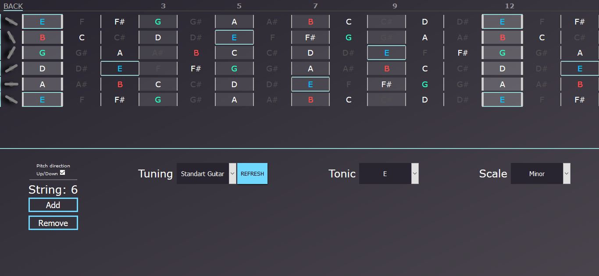
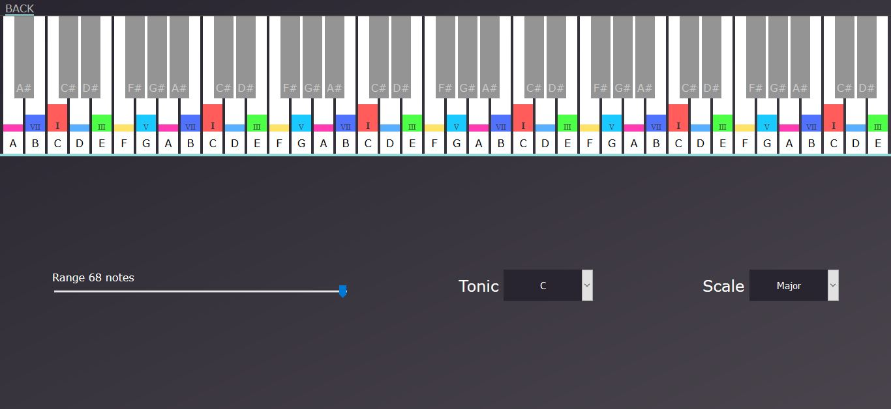
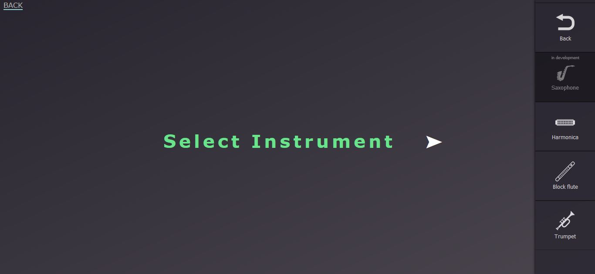
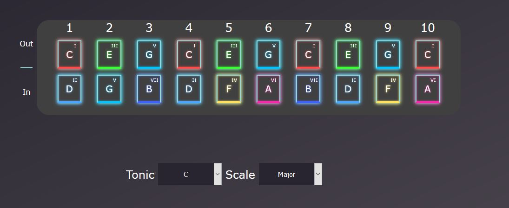
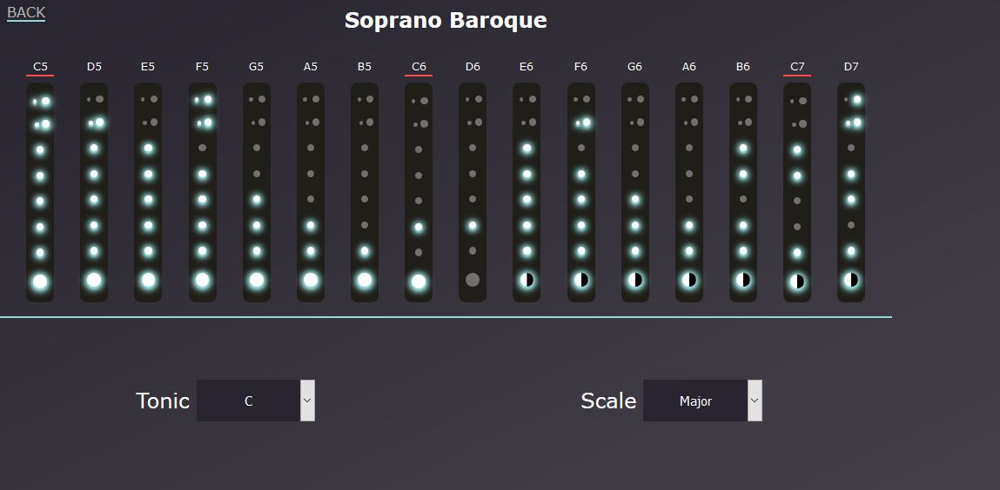
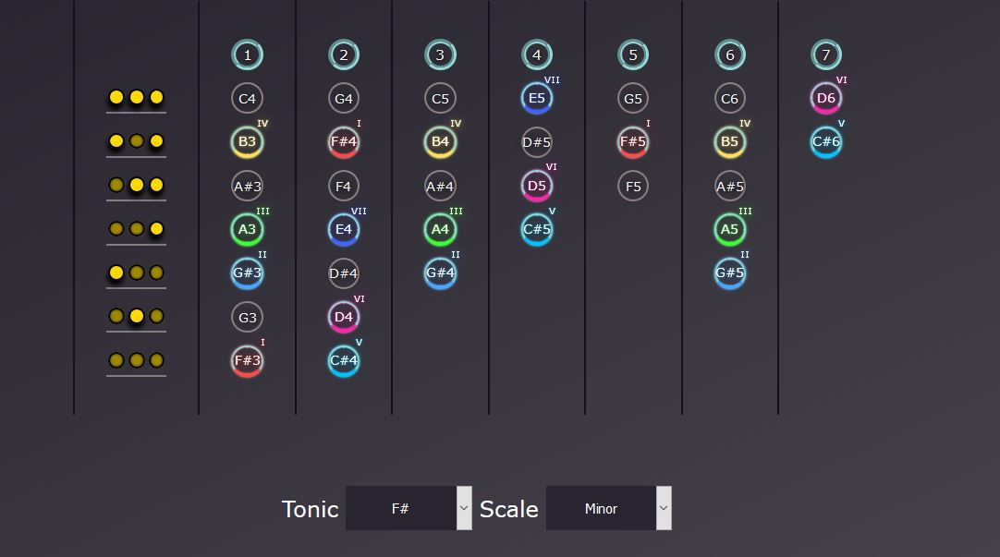
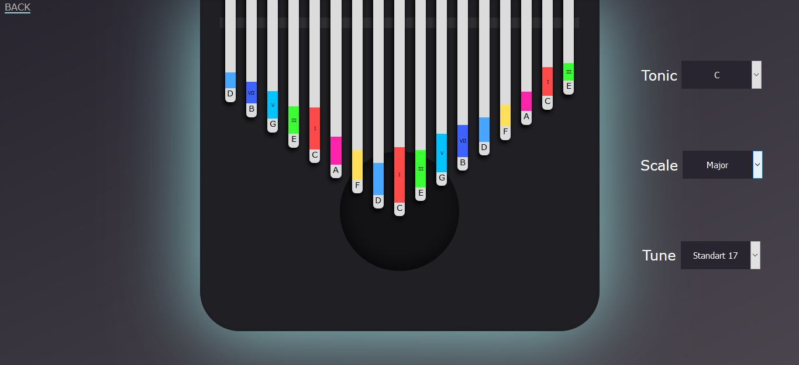
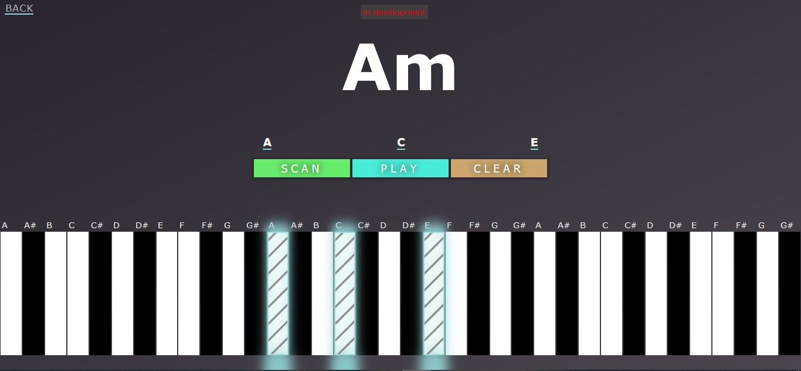

Music Scaller 
Some things may be incomplete, broken
or may differ from the screenshots below
Why and for WHAT?
- to remember the location of notes on the instrument and how to play in different keys
- learn to fluently play his instrument without hesitation about where the “that” note
- see the location of scale degrees using an example
- and much more

Everything is simple The application consists of modules, one module for each type of musical instrument (strings, keys) You need to select the tonic, fret, additional settings of the module, and you will see the location of the notes, the highlighting of the notes with tonality and the highlighting of the tonic and other degrees on the instrument.
Instruments
Stringed instruments
 HereA virtual fingerboard is located at the top of the screen, on the left side there are guitar pegs that allow you to change the tone of the string using the scroll wheel of the mouse or click (the choice of the direction of the change in height can be selected in the checkbox below) You can also choose a pattern of a system or instrument, it can be a guitar, violin, ukulele, bass, etc. This module imitates the neck of the main stringed plucked (including bowed) instruments
-
the settings section allows:
- string tuning
- change in the number of strings
Keys instruments
 HereThis module mimics the keys, which are marked with different colors and are marked with gamma stage numbers. Thanks to this module, you can easily spy notes included in the tonality
Wind instruments module
 HereThis module is a separate container for a group of tools, choosing one of them, you are offered the appropriate interface
-

Saxophone -

Harmonica
-

Block flute -

Trumpet
Addition instruments
Kalimba
 HereFunctions
Tuner
In development
Chord finder
 HereThis module can detect most common chords, you select notes on the keyboard, press scan or play, and it determines the chord
Music analyzer
In development
Author

Bogdan Bida
-
Contacts & Info
- GitHub: https://github.com/BogdanBida
- LinkedIn: https://www.linkedin.com/in/bogdan-bida/
- Instagram: https://www.instagram.com/bida_bogdan/
- Gmail: bogdanbida.ua@gmail.com